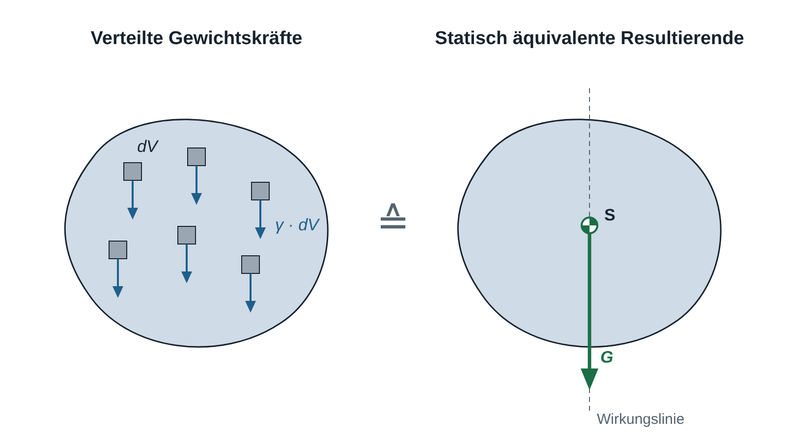
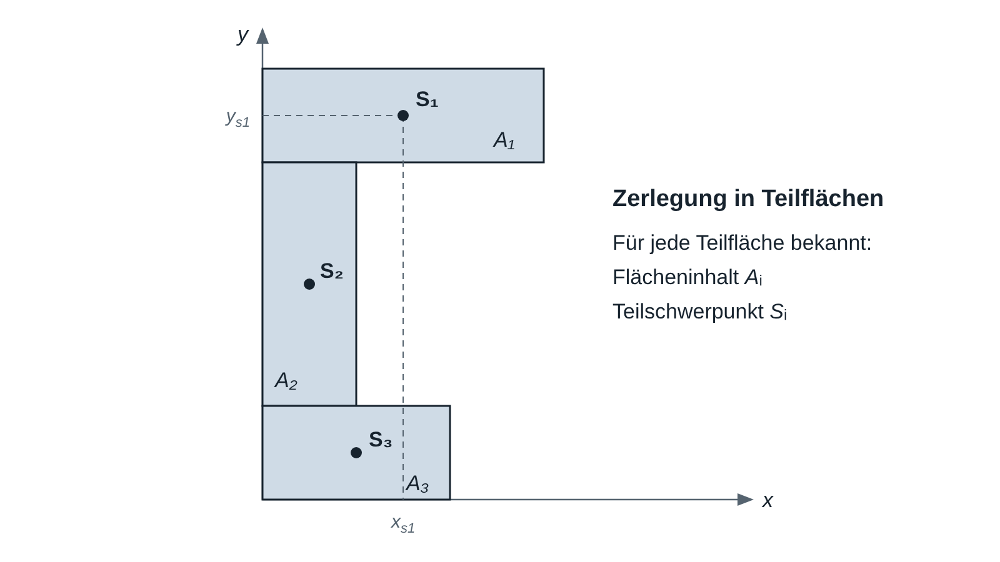
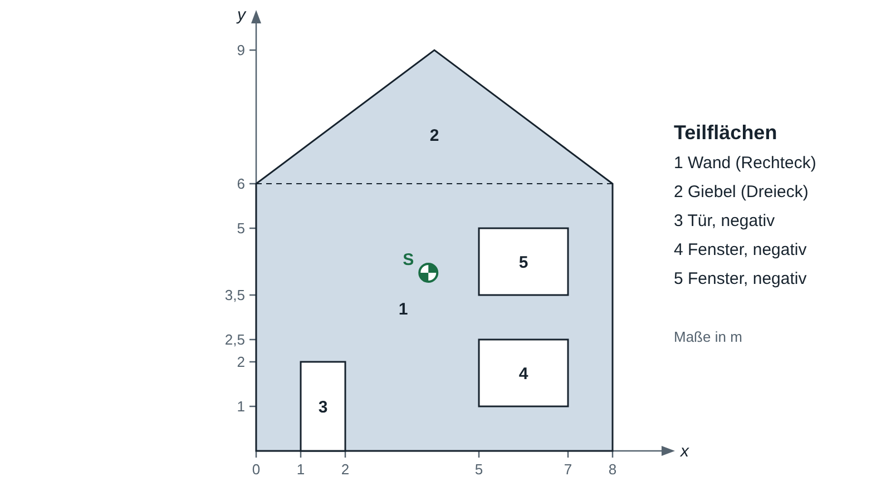
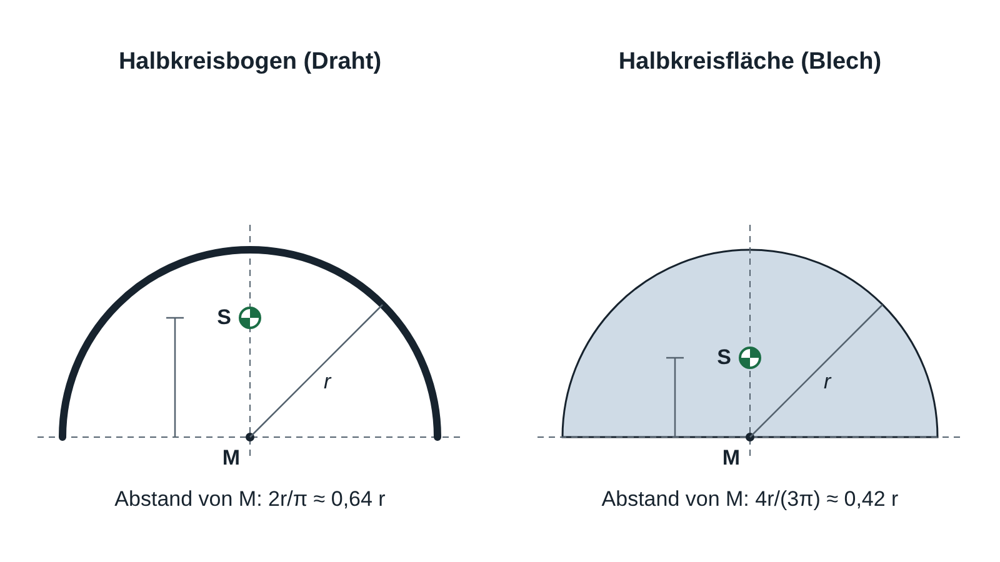

Der Schwerpunkt
Jana Keller, Werkstudentin in einem Stahlbaubetrieb, soll einen L-förmigen Blechzuschnitt mit dem Hallenkran umsetzen. Sie schlägt den Haken dort an, wo sie die Mitte des Blechs vermutet. Beim Anheben kippt das Blech zur Seite und hängt schief am Haken. Der Meister fragt sie, wo der Schwerpunkt des Zuschnitts liegt. Keller kann das nicht abschätzen und fragt sich, wie man diesen Punkt für eine zusammengesetzte Form berechnet.
Wie sehr stimmen Sie den drei Aussagen zu? Jede Aussage wird an der Stelle aufgelöst, die sie beantwortet. Wer sich vorher festlegt, liest gezielter.
Der Schwerpunkt eines Körpers ist immer sein geometrischer Mittelpunkt.
Der Schwerpunkt einer L-förmigen Fläche liegt in der Mitte des Rechtecks, das die Fläche umschließt.
Ein Halbkreisbogen aus Draht und eine Halbkreisfläche aus Blech mit gleichem Radius haben denselben Schwerpunkt.
- erklären, unter welcher Voraussetzung Schwerpunkt und Volumenmittelpunkt eines Körpers zusammenfallen;
- den Schwerpunkt einer aus Teilflächen zusammengesetzten Fläche berechnen und das Ergebnis auf Plausibilität prüfen;
- Linienschwerpunkt und Flächenschwerpunkt unterscheiden und den Schwerpunkt zusammengesetzter Linien berechnen.
Der Schwerpunkt eines Körpers
ROHENTWURF der KI: Der Text dieses Abschnitts ist ein Entwurf nach Ihrem Foliensatz. Prüfen Sie ihn fachlich, überarbeiten Sie ihn in Ihren Worten und löschen Sie danach diesen Kasten.
Auf jedes Volumenteilchen \(\mathrm{d}V\) eines Körpers wirkt die kleine Gewichtskraft \(\gamma\,\mathrm{d}V\); dabei ist \(\gamma\) das spezifische Gewicht. Gesucht ist die eine Kraft \(G\), die diesen verteilten Kräften statisch äquivalent ist (Abbildung 1.1). Ihr Betrag ergibt sich durch Aufaddieren aller Teilkräfte, beim homogenen Körper also \(G = \gamma\,V\). Ihre Wirkungslinie folgt aus der Bedingung, dass \(G\) bezüglich jeder Koordinatenachse dasselbe Moment hat wie die verteilten Kräfte. Der Punkt, durch den die Wirkungslinie bei jeder Richtung der Schwerkraft geht, heißt Schwerpunkt \(S\).

Beim homogenen Körper kürzt sich \(\gamma\) heraus, und es bleibt
\[ x_s = \frac{\int x\,\mathrm{d}V}{\int \mathrm{d}V}, \qquad y_s = \frac{\int y\,\mathrm{d}V}{\int \mathrm{d}V}, \qquad z_s = \frac{\int z\,\mathrm{d}V}{\int \mathrm{d}V}. \]
Der Schwerpunkt ist dann der Volumenmittelpunkt und hängt nur von der Form ab. Zwei Sonderfälle sparen Rechenarbeit. Besitzt der Körper eine Symmetrieachse, liegt \(S\) auf ihr. Bei einer Scheibe mit konstanter Dicke \(t\) gilt \(\mathrm{d}V = t\,\mathrm{d}A\); die Dicke kürzt sich, und man erhält den Flächenschwerpunkt
\[ x_s = \frac{\int x\,\mathrm{d}A}{\int \mathrm{d}A}, \qquad y_s = \frac{\int y\,\mathrm{d}A}{\int \mathrm{d}A}. \]
Mit diesem Memory rufen Sie die acht Grundbegriffe der Einheit aus dem Gedächtnis ab (Lernziel 1). Decken Sie je zwei Karten auf und finden Sie zu jedem Begriff die passende Definition; einige Begriffe werden erst in den folgenden Abschnitten erklärt, legen Sie sich trotzdem fest. Nach jedem Versuch erklärt die Rückmeldung, warum die beiden Karten zusammengehören oder nicht.
„Der Schwerpunkt eines Körpers ist immer sein geometrischer Mittelpunkt.“
Auflösung: teils. Das gilt nur für homogene Körper mit konstanter Dichte; dann fällt der Schwerpunkt mit dem Volumenmittelpunkt zusammen. Ist das Gewicht ungleichmäßig verteilt, verschiebt sich der Schwerpunkt zur schwereren Seite.
Der Schwerpunkt zusammengesetzter Flächen
ROHENTWURF der KI: Der Text dieses Abschnitts ist ein Entwurf nach Ihrem Foliensatz. Prüfen Sie ihn fachlich, überarbeiten Sie ihn in Ihren Worten und löschen Sie danach diesen Kasten.
Viele Querschnitte lassen sich in Teilflächen zerlegen, deren Flächeninhalt \(A_i\) und Schwerpunkt \((x_{si} \mid y_{si})\) bekannt sind (Abbildung 1.2). Das Integral über die Gesamtfläche wird dann zur Summe über die Teilflächen:
\[ x_s = \frac{\sum x_{si}\,A_i}{\sum A_i}, \qquad y_s = \frac{\sum y_{si}\,A_i}{\sum A_i}. \]

Jede Teilfläche geht mit ihrer Größe gewichtet ein, der Schwerpunkt liegt deshalb näher an den großen Teilflächen. Das Vorgehen gilt nicht nur für Rechtecke, sondern für alle Teilflächen mit bekanntem Schwerpunkt, etwa Dreiecke und Kreise; Werte für einfache Flächen stehen in Tabellen (Groß et al., 2024).
In der Rechnung hilft eine feste Reihenfolge: Koordinatensystem festlegen, Fläche zerlegen, für jede Teilfläche \(A_i\), \(x_{si}\) und \(y_{si}\) in eine Tabelle eintragen, Summen bilden und dividieren. Prüfen Sie das Ergebnis anschließend auf Plausibilität: Der Schwerpunkt liegt innerhalb des umschließenden Rechtecks, auf einer vorhandenen Symmetrieachse und bei zwei Teilflächen auf der Strecke zwischen den beiden Teilschwerpunkten. Im Material muss er nicht liegen.
Beispiel: Hausfassade mit Tür und Fenstern
Gesucht ist der Flächenschwerpunkt der Fassade in Abbildung 1.3. Der Umriss besteht aus einem Rechteck (Wand) und einem Dreieck (Giebel). Tür und Fenster sind Aussparungen: Dort fehlt Fläche. Man behandelt sie wie jede andere Teilfläche, setzt ihren Flächeninhalt aber negativ an.

Der Schwerpunkt eines Dreiecks liegt auf einem Drittel der Höhe über der Grundseite, beim Giebel also bei \(y_{s2} = 6 + 3/3 = 7\ \text{m}\). Damit ergibt sich die Tabelle:
| \(i\) | Teilfläche | \(A_i\) in m² | \(x_{si}\) in m | \(y_{si}\) in m | \(x_{si}\,A_i\) in m³ | \(y_{si}\,A_i\) in m³ |
|---|---|---|---|---|---|---|
| 1 | Wand, Rechteck 8 × 6 | 48 | 4 | 3 | 192 | 144 |
| 2 | Giebel, Dreieck mit Grundseite 8 und Höhe 3 | 12 | 4 | 7 | 48 | 84 |
| 3 | Tür, 1 × 2 | −2 | 1,5 | 1 | −3 | −2 |
| 4 | Fenster unten, 2 × 1,5 | −3 | 6 | 1,75 | −18 | −5,25 |
| 5 | Fenster oben, 2 × 1,5 | −3 | 6 | 4,25 | −18 | −12,75 |
| Summe | 52 | 201 | 208 |
\[ x_s = \frac{\sum x_{si}\,A_i}{\sum A_i} = \frac{201}{52} \approx 3{,}87\ \text{m}, \qquad y_s = \frac{\sum y_{si}\,A_i}{\sum A_i} = \frac{208}{52} = 4{,}00\ \text{m} \]
Plausibilitätsprüfung: Ohne Aussparungen läge der Schwerpunkt wegen der Symmetrie bei \(x_s = 4{,}00\ \text{m}\) und bei \(y_s = 228/60 = 3{,}80\ \text{m}\). Die beiden Fenster nehmen rechts Fläche weg, deshalb rückt \(S\) um 0,13 m nach links. Die Aussparungen liegen überwiegend im unteren Teil, deshalb rückt \(S\) um 0,20 m nach oben. Der Schwerpunkt entfernt sich also von den Aussparungen.
Typischer Fehler: Die Aussparungen werden im Zähler abgezogen, in der Flächensumme im Nenner aber vergessen. Das negative Vorzeichen gilt in beiden Summen.
Mit der Simulation üben Sie, die Lage des Schwerpunkts abzuschätzen, bevor Sie rechnen (Lernziel 2). Stellen Sie die Länge \(b\) der L-Fläche ein, tragen Sie Ihre Schätzung für \(x_s\) und \(y_s\) ein und wählen Sie erst dann „Schätzung prüfen“; wiederholen Sie das für mindestens drei Längen. Die Rückmeldung zeigt den berechneten Punkt mit Rechnung und erklärt, warum Ihre Schätzung abweicht.
„Der Schwerpunkt einer L-förmigen Fläche liegt in der Mitte des Rechtecks, das die Fläche umschließt.“
Auflösung: nein. Jede Teilfläche geht mit ihrer Größe gewichtet in die Rechnung ein, und die fehlende Ecke zieht den Schwerpunkt von der Rechteckmitte weg. Er kann dabei sogar außerhalb des Materials liegen.
Der Linienschwerpunkt
ROHENTWURF der KI: Der Text dieses Abschnitts ist ein Entwurf nach Ihrem Foliensatz. Prüfen Sie ihn fachlich, überarbeiten Sie ihn in Ihren Worten und löschen Sie danach diesen Kasten.
Bei dünnen Stäben, Drähten oder Seilen ist das Gewicht entlang einer Linie verteilt. Bei konstantem Querschnitt mit Dicke \(t\) und Breite \(b\) gilt \(\mathrm{d}V = t\,b\,\mathrm{d}s\); Dicke und Breite kürzen sich, und es bleibt der Linienschwerpunkt
\[ x_s = \frac{\int x\,\mathrm{d}s}{\int \mathrm{d}s}, \qquad y_s = \frac{\int y\,\mathrm{d}s}{\int \mathrm{d}s}. \]
Für Linien aus \(n\) Teillinien mit den Längen \(l_i\) und bekannten Teilschwerpunkten gilt entsprechend
\[ x_s = \frac{\sum x_{si}\,l_i}{\sum l_i}, \qquad y_s = \frac{\sum y_{si}\,l_i}{\sum l_i}. \]
Gewichtet wird also mit Längen und nicht mit Flächen. Deshalb hat derselbe Umriss als Draht einen anderen Schwerpunkt als als Blech (Abbildung 1.4): Beim Halbkreisbogen mit Radius \(r\) liegt der Schwerpunkt im Abstand \(2r/\pi \approx 0{,}64\,r\) vom Kreismittelpunkt, bei der Halbkreisfläche im Abstand \(4r/(3\pi) \approx 0{,}42\,r\) (Groß et al., 2024). In beiden Fällen liegt er auf der Symmetrieachse, beim Draht jedoch an einer Stelle, an der sich kein Material befindet.

„Ein Halbkreisbogen aus Draht und eine Halbkreisfläche aus Blech mit gleichem Radius haben denselben Schwerpunkt.“
Auflösung: nein. Beim Draht liegt das gesamte Gewicht auf dem Bogen, beim Blech auch im Inneren nahe dem Durchmesser. Der Schwerpunkt des Drahtes liegt deshalb weiter vom Kreismittelpunkt entfernt als der des Blechs.
Lern-Check
Der Lern-Check prüft jedes der drei Lernziele mit einer Frage; er wird nicht benotet. Wählen Sie pro Frage eine Antwort, ohne zurückzublättern. Die Rückmeldung erklärt danach jede Option, auch die falschen.
- Beim homogenen Körper fällt der Schwerpunkt mit dem Volumenmittelpunkt zusammen. Bei einer Scheibe mit konstanter Dicke genügt deshalb der Flächenschwerpunkt.
- Für zusammengesetzte Flächen gilt \(x_s = \sum A_i\,x_{si} / \sum A_i\) und entsprechend für \(y_s\). Aussparungen gehen als negative Flächen ein. Der Schwerpunkt liegt näher an der größeren Teilfläche und kann außerhalb des Materials liegen.
- Beim Linienschwerpunkt gewichtet man mit Längen statt mit Flächen. Derselbe Umriss hat deshalb als Draht einen anderen Schwerpunkt als als Blech.
Wiederholen
- Was bedeutet „homogener Körper“, und was folgt daraus für die Lage des Schwerpunkts?
- Wie lauten die Formeln für die Schwerpunktkoordinaten einer Fläche aus \(n\) bekannten Teilflächen?
Anwenden
- Eine L-Fläche besteht aus einem stehenden Rechteck (20 mm × 100 mm) und einem rechts unten angesetzten liegenden Rechteck (140 mm × 20 mm). Berechnen Sie \(x_s\) und \(y_s\) bezogen auf die linke untere Ecke und prüfen Sie Ihr Ergebnis mit der Simulation im zweiten Abschnitt.
- Ein Draht ist zu einem rechten Winkel mit den Schenkellängen 60 mm und 100 mm gebogen. Berechnen Sie die Koordinaten des Linienschwerpunkts bezogen auf die Ecke.
Beurteilen
- Eine Kommilitonin sagt: „Bei einem symmetrischen Bauteil muss ich den Schwerpunkt gar nicht berechnen.“ Inwieweit stimmt das, und was bleibt bei nur einer Symmetrieachse zu rechnen?
- Zurück zur Szene: Der Schwerpunkt des L-förmigen Zuschnitts liegt außerhalb des Blechs. Beurteilen Sie, ob ein einzelner Anschlagpunkt auf dem Blech genügt, damit es waagerecht hängt, und begründen Sie Ihre Antwort.